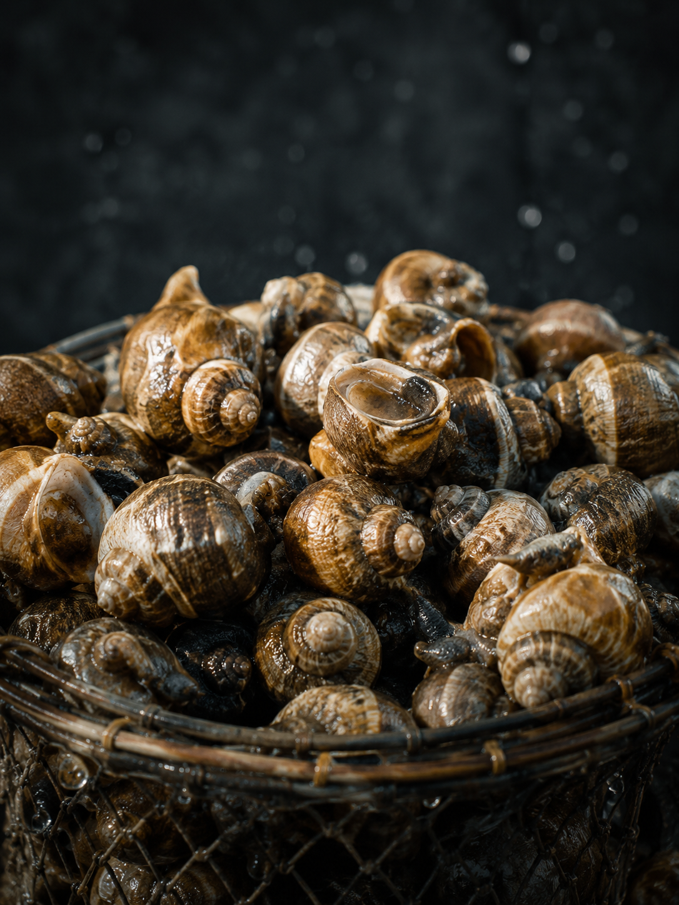
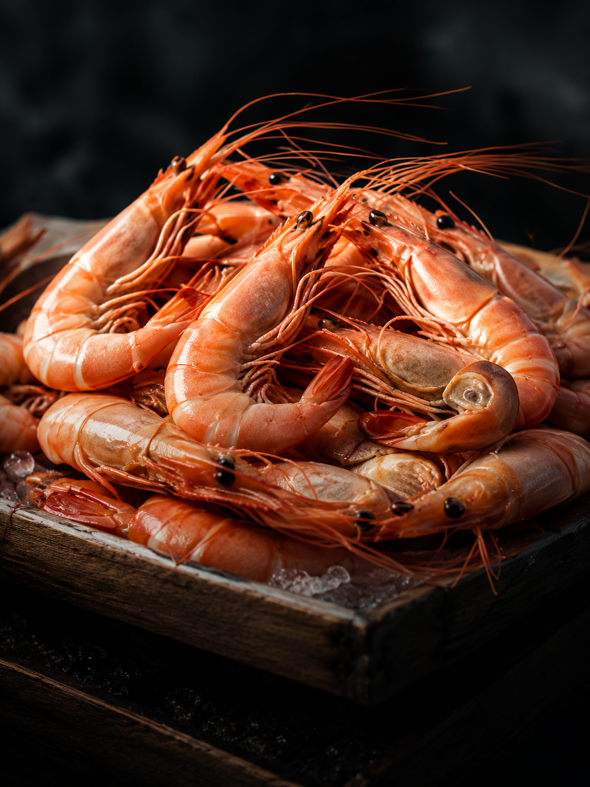
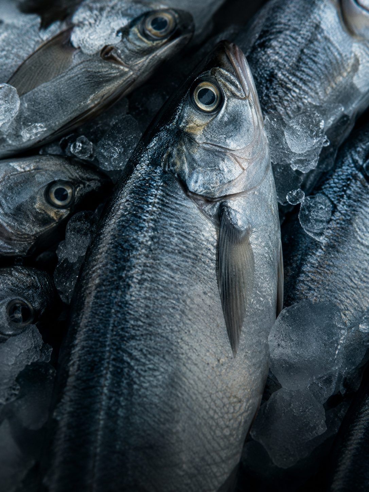
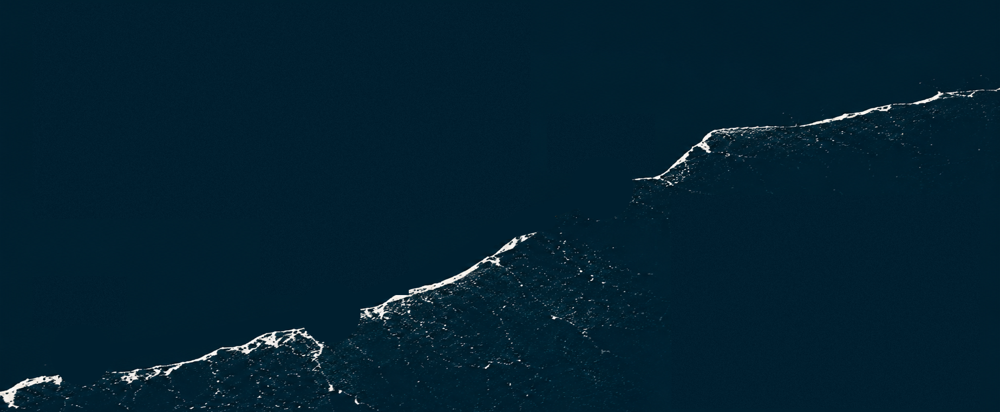

BULOTS
VIVANTS
VIVANTS
Petits & moyens
Les ventes dépendent des marées, de la météo et des retours de pêche. Pour ne rien manquer, suivez nos arrivages sur Facebook.
VOIR LES PROCHAINES VENTESPêche artisanale au casier au large de Dieppe. Chaque jour, une pêche différente, des produits ultra-frais, souvent encore vivants, sélectionnés avec exigence.



Le M'Alizé pratique la pêche artisanale au casier au large de Dieppe. Posés sur le fond et garnis d'un appât — la « boëtte » —, les casiers attirent bulots et crustacés sans abîmer les fonds. Une méthode sélective : seules les belles pièces sont gardées, le reste retourne à l'eau. Taille minimale du bulot : 4,5 cm ; la ressource est encadrée (quotas, nombre de casiers et de jours en mer).
Produits de partenaires locaux, proposés pour la livraison.
Vente directe à quai à Dieppe, secteur « Les Barrières », au retour de pêche — selon la météo et les arrivages. Livraison possible sur commande (tournées).
Infos & commandes : 06 22 13 57 13 ou message sur la page Facebook.
Jérôme Féron, patron-pêcheur, une vie en mer, un bateau construit pour durer et une aventure familiale et locale.
Originaire de la Manche, Jérôme Féron commence la pêche à 20 ans. Matelot puis patron à Pirou et Agon-Coutainville, il rejoint Dieppe en 2007 et s'installe à son compte en mai 2008. Il rachète alors le navire de son ancien armateur, qu'il rebaptise le Stélorient, et le mène une dizaine d'années sur les bancs à bulots.
Avec un permis de mise en exploitation, il fait concevoir un navire neuf, sur mesure : le M'Alizé, pensé plus confortable, plus ergonomique et plus sûr pour le patron et son matelot.
« M'Alizé » est un clin d'œil à Alizée, la dernière fille de Jérôme et de son épouse Marine, qui veille à la logistique commerciale. Une affaire de famille, locale et indépendante.

De Fécamp à Dieppe, en passant par Saint-Valéry-en-Caux, la Côte d'Albâtre dévoile des paysages spectaculaires, des ports de caractère et un savoir-faire unique.
Port du jour, arrivages, ouverture des ventes à quai : toutes les infos en temps réel sur Facebook.